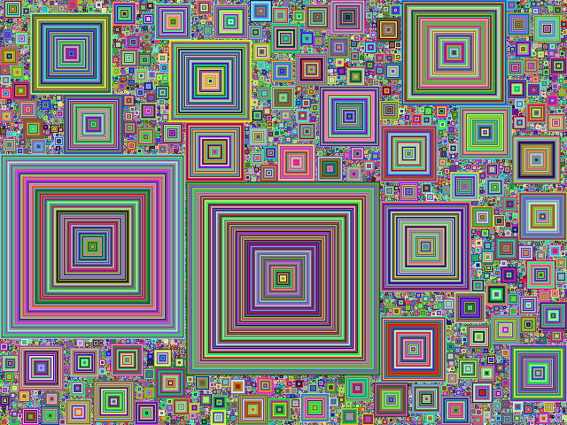

The purpose of this assignment is to learn to
You will generate a visualization that looks like that!
You will be drawing Square Fill using the following logic: (examples provided below.)
Observe how the code initizes the ColorGrid. The code provides a variable that represents a pixel is free, which is
embedded into the Color objects alpha value. This allows for a much quicker check later on to see if a pixel is free,
you may refactor this if you do not wish to use the alpha value for this purpose.
Provide the code necessary to generate a random point on the grid, check that point to make sure it is free, and then set that location to some random color.
An example snippet is provided in the next TODO that gives an example of how to set up some int's to keep track of each layers boundaries. Ensure that these points are not out of bounds before continuing.
In the first for loop, provide the logic for checking each point on the current layer to make sure it is free, if not break the loops to generate a new point on the grid to start from.
If the current layer has no collisions, generate a random color and then begin filling in the points along the current layer with the generated color.
Run and visualize the code.
